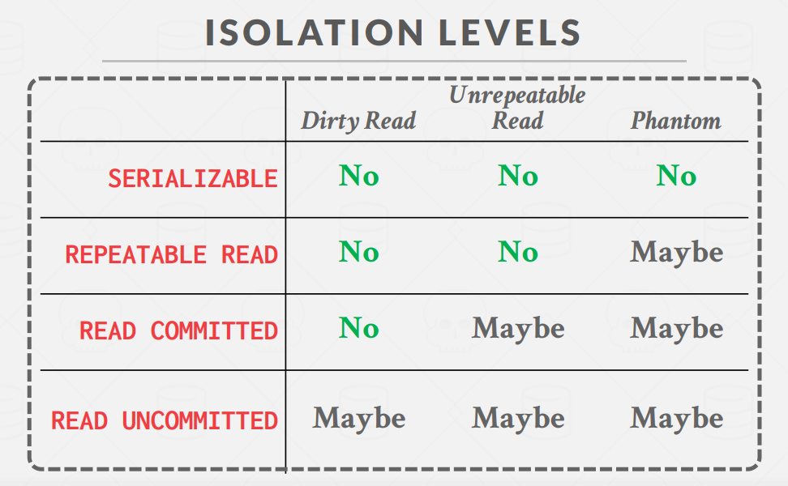

终于来到CMU-15445课程的最后一部分，并发事务控制，这一部分的实现难度也更大，我也是通过这里的学习为后来的计算机系统能力大赛打下了良好的编程基础吧，再次感谢Andy对这门开源课程的贡献。
P4主要分为以下三个部分：
- Lock Manager：锁管理器，利用 2PL 协议实现并发控制。支持
REPEATABLE_READ、READ_COMMITTED和READ_UNCOMMITTED三种隔离级别，支持SHARED、EXCLUSIVE、INTENTION_SHARED、INTENTION_EXCLUSIVE和SHARED_INTENTION_EXCLUSIVE五种锁，支持 table 和 row 两种锁粒度，支持锁升级。这是P4最重点的部分。 - Deadlock Detection：死锁检测，运行在一个 background 线程，每间隔一定时间检测当前是否出现死锁，并挑选合适的事务将其 abort 以解开死锁。
- Concurrent Query Execution：修改之前实现的
SeqScan、Insert和Delete算子，加上适当的锁以实现并发的查询。
Task1 Lock Manager
这一个任务需要根据两阶段锁协议实现在不同隔离级别下的锁并发控制。不同隔离级别下解决的异常情况存在差异。

Lock Manager 的作用是处理事务发送的锁请求，例如有一个 SeqScan 算子需要扫描某张表，其所在事务就需要对这张表加 S 锁。而加读锁这个动作需要由 Lock Manager 来完成。需要注意的是，P4 中的实现细节很多，在我们进行相关操作后都需要同步和维护相应的状态。
首先我们来讲讲两阶段封锁协议并发控制算法：这个算法的思想是，将事务加锁和解锁分为两个阶段，分别为事务增长阶段和事务收缩阶段。我们在事务增长的阶段进行加锁，在释放一个封锁之后进入收缩阶段，而一旦事务进入收缩阶段后就不能加锁和获得任何其他封锁，只能进行事务解锁，从而保证事务的可串行化并发调度正确。由于这里只需要我们实现读未提交、读已提交以及可重复度隔离级别，因此我们不需要严格遵循两阶段封锁来进行。
我们以表级锁加锁为例，介绍 Lock Manager 的实现思路：
- 检查事务的状态：若 txn 处于 Abort/Commit 状态，则抛逻辑异常。若 txn 处于 Shrinking 状态，则需要检查 txn 的隔离级别和当前锁请求类型，在
REPEATABLE_READ下，不允许解锁，造成事务终止，并抛出LOCK_ON_SHRINKING异常；在READ_COMMITTED下，若为 IS/S 锁，则正常通过，否则抛LOCK_ON_SHRINKING异常；在READ_UNCOMMITTED下，若为 IX/X 锁，抛LOCK_ON_SHRINKING异常，否则抛LOCK_SHARED_ON_READ_UNCOMMITTED异常。若 txn 处于 Growing 状态，若隔离级别为READ_UNCOMMITTED且锁类型为 S/IS/SIX，抛LOCK_SHARED_ON_READ_UNCOMMITTED。其余状态正常通过。 - 获取锁队列：从
table_lock_map_中获取 table 对应的 lock request queue。注意需要对 map 加锁，并且为了提高并发性，在获取到 queue 之后立即释放 map 的锁。若 queue 不存在则创建。 - 检查是否需要进行锁升级：我们需要遍历队列查看有没有与当前事务 id 相同的请求。如果存在这样的请求，并且该请求已经被授予，则代表当前事务在此前已经得到了在此资源上的一把锁，接下来可能需要锁升级。因为假如事务此前的请求还没有被通过，事务会被阻塞在 Lock Manager 中，不可能再去尝试获取另一把锁。接着判断锁升级的条件，判断此前授予锁类型是否与当前请求锁类型相同。若相同，则代表是一次重复的请求，直接返回。若不同，判断当前资源上是否有另一个事务正在尝试升级。若有，则终止当前事务，抛出
UPGRADE_CONFLICT异常。因为不允许多个事务在同一资源上同时尝试锁升级。然后，判断升级锁的类型和之前锁是否兼容，不能反向升级。 - 将锁请求加入请求队列，并尝试获取锁：这里需要用到条件变量，条件变量是线程同步中的一种机制，通常和互斥锁配合使用来完成线程同步通信。条件变量与互斥锁配合使用。首先需要持有锁，并查看是否能够获取资源。这个锁与资源绑定，是用来保护资源的锁。若暂时无法获取资源，则调用条件变量的 wait 函数，此时当前线程会被挂起，以节省资源。此外，允许有多个线程在 wait 同一个 latch。当其他线程的活动使得资源状态发生改变时，需要调用条件遍历的
notify_all()函数，将阻塞在此条件变量上的所有线程进行唤醒。 - 进行锁授予：我们需要遍历请求队列，判断当前锁请求是否与所有的已经 granted 的请求兼容，若存在不兼容的请求则不能进行锁授予。接着需要我们判断优先级，遍历队列，如果当前请求是第一个 waiting 状态的请求，则代表优先级最高。如果当前请求前面还存在其他 waiting 请求，则要判断当前请求是否和前面的 waiting 请求兼容。若兼容，则仍可以视为优先级最高。若存在不兼容的请求，则优先级不为最高。也就是所有兼容的锁请求可以被一起授予。
接着我们介绍事务解锁时 Lock Manager 的实现思路，同样以表级锁解锁为例：
- 检查表上的行级锁是否都已经进行释放。
- 获取对应的请求队列，遍历请求队列，找到对应的锁请求，若不存在对应的请求，抛
ATTEMPTED_UNLOCK_BUT_NO_LOCK_HELD异常。找到对应的请求后，根据事务的隔离级别和锁类型修改其状态。当隔离级别为REPEATABLE_READ时，S/X 锁释放会使事务进入 Shrinking 状态。当为READ_COMMITTED时，只有 X 锁释放使事务进入 Shrinking 状态。当为READ_UNCOMMITTED时，X 锁释放使事务 Shrinking，S 锁不会出现。 - 最后，在请求队列中移除对应的锁请求即可。
Task2 Deadlock Detection
由于我们采用两阶段封锁协议，可能会遇到多个事务的循环等待而产生的死锁问题。在这一部分，我们需要使用wait for图算法来定期检查事务之间的等待关系，如果图中出现环的结构，则代表出现死锁，需要挑选事务终止以打破死锁。这里我们并不需要时刻维护 wait for 图，而是在死锁检测线程被唤醒时，根据当前请求队列构建 wait for 图，再通过 wait for 图判断是否存在死锁。当判断完成后，将丢弃当前 wait for 图。下次线程被唤醒时再重新构建。
构建 wait for 图的过程是，遍历 table_lock_map 和 row_lock_map 中所有的请求队列，对于每一个请求队列，将所有满足等待关系的一对 tid 加入 wait for 图的边集。满足等待关系是指，对于两个事务 a 和 b，a 是 waiting 请求，b 是 granted 请求，则生成 a->b 一条边。
在成功构建 wait for 图后，我们通过DFS搜索算法进行有向图环检测。在发现环后，我们可以得到环上的所有节点。此时我们挑选最年轻的事务将其终止，释放其持有的锁，并唤醒正在阻塞的相关事务。需要注意，图中可能存在多个环，需要我们重复这个过程直到当前存在的所有环都被打破。
Task3 Concurrent Query Execution
这一部分需要我们将 transaction 应用到之前实现的算子（Insert、Delete与SeqScan）中，以支持事务的并发执行。
SeqScan：在READ_UNCOMMITTED的隔离级别下则无需加锁。在 READ_COMMITTED 下，在 Next() 函数中，若表中已经没有数据，则提前释放之前持有的锁。在 REPEATABLE_READ 下，在 Commit/Abort 时统一释放，无需手动释放。在进行表扫描的时候，我们需要先给表加上意向读锁，然后给相应的行加上 S 锁。当然如果是全表扫描则可以直接给表加上读锁。
Insert&Delete：在这里，两个算子的加锁思路类似。我们需要先给对应的表加上意向写锁，再为行加上 X 锁。锁在 Commit/Abort 时统一释放，无需手动释放。在这里其实就可以发现，我们为 Insert 算子加行锁是解决不了幻读问题的，因为插入的是新构造的元组，而我们无法解决查询时的间隙问题。当然在P4不需要我们实现可串行化隔离级别，因此就不用考虑这个问题。
最后，终于完成CMU-15445的学习笔记记录啦，总的来说还是有很多收获的，特别是混杂着期末和各种竞赛时痛苦Debug的那段时光！